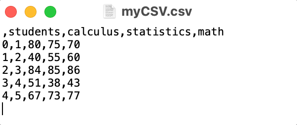
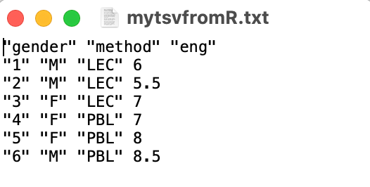
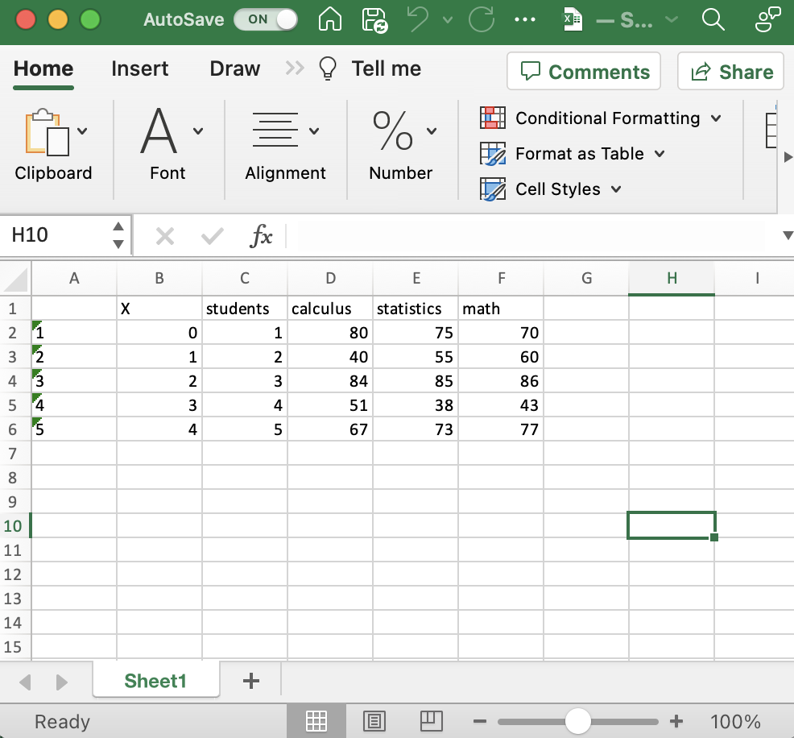
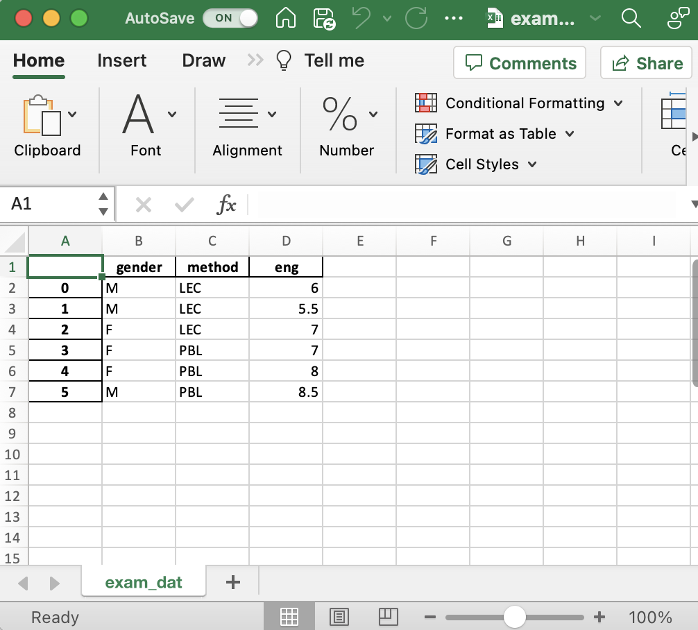

getwd()ตอนที่ 4.1 การนำเข้าและเขียนชุดข้อมูล (importing and writing data)
การนำเข้าข้อมูลถือได้ว่าเป็นขั้นตอนแรกของการดำเนินงานวิเคราะห์ข้อมูล ในบทเรียนนี้จะกล่าวถึงการนำเข้าข้อมูลลักษณะต่าง ๆ ในภาษา R และ Python รวมทั้งการเขียนชุดข้อมูลเป็นไฟล์ข้อมูลเพื่อนำไปใช้ตามวัตถุประสงค์ต่าง ๆ บทเรียนนี้จะกล่าวถึงการนำเข้าไฟล์ข้อมูลที่มักใช้ในการทำงานทางด้านสถิติและวิทยาการข้อมูล ได้แก่ ไฟล์ข้อมูลประเภท flat file และไฟล์ข้อมูลประเภท spreadsheet รายละเอียดมีดังนี้
เรื่องที่ 4.1.1 การกำหนด working directory
สิ่งสำคัญอย่างแรกที่ผู้ใช้ภาษา R และ Python จำเป็นต้องทราบก่อนที่จะนำเข้าหรือเขียนชุดข้อมูลคือการเรียกดูและกำหนด working directory ของโปรแกรม working directory คือ folder ที่ R หรือ Python ใช้สำหรับเรียกไฟล์ข้อมูลหรือบันทึกไฟล์ข้อมูล รวมทั้งไฟล์อื่น ๆ ที่เกี่ยวข้อง
ภาษา R
ใน R ผู้วิเคราะห์สามารถเรียกดู working directory ของโปรแกรมได้โดยใช้ฟังก์ชัน getwd() ดังตัวอย่างต่อไปนี้
[1] "/Users/siwachoat/Desktop"ผลลัพธ์ในข้างต้นแสดงว่า working directory ที่กำหนดมีที่อยู่คือ “/Users/siwachoat/Desktop” ในกรณีที่ต้องการเปลี่ยนที่อยู่ของ working directory สามารถทำได้ด้วยฟังก์ชัน setwd() โดยกำหนดที่อยู่ของ working directory ที่ต้องการเอาไว้ภายใต้เครื่องหมาย quotation ยกตัวอย่างเช่นต้องการเปลี่ยน working directory จากเดิม “/Users/siwachoat/Desktop” เป็น “/Users/siwachoat/Documents” สามารถเขียนคำสั่งได้ดังนี้
setwd("/Users/siwachoat/Documents")
getwd()[1] "/Users/siwachoat/Documents"จากคำสั่งข้างต้นจะเห็นว่า working directory เปลี่ยนจาก “/Users/siwachoat/Desktop” ไปเป็น “/Users/siwachoat/Documents” ตามที่ต้องการ
หมายเหตุ : เนื่องจากที่อยู่ของ working directory อาจเป็น subfolder ภายใต้ folder ใด ๆ บนเครื่องคอมพิวเตอร์ การกำหนดที่อยู่ของ working directory ที่ต้องการจึงจะกำหนดโดยเขียนเรียงเป็นลำดับชั้นจาก directory ที่อยู่บนสุดลงไปจาก subdirectory ที่อยู่ภายใต้ directory นั้น และจะมีการใช้สัญลักษณ์ \ หรือ // อย่างใดอย่างหนึ่งเป็นตัวคั่นระหว่าง directory กับ subdirectory ดังกล่าว
ภาษา Python
สำหรับภาษา Python การเรียกดูและกำหนด working directory สามารถทำได้ด้วย library os โดยใช้ฟังก์ชัน os.getcwd() และ os.chdir() ตามลำดับ ตัวอย่างต่อไปนี้แสดงการเรียกดู working directory ในภาษา Python
import os
os.getcwd()'/Users/siwachoat/Library/CloudStorage/OneDrive-ChulalongkornUniversity/Documents/บริการวิชาการ/chapterbook มสธ./chapter/chapter'import os
os.chdir("/Users/siwachoat/Desktop")
os.getcwd()'/Users/siwachoat/Desktop'ในทำนองเดียวกับตัวอย่างในภาษา R ผลลัพธ์ข้างต้นแสดงให้เห็นว่า working directory ที่กำหนดไว้คือ “/Users/siwachoat/Desktop” ในกรณีที่ต้องการเปลี่ยน working directory ดังกล่าวสามารถได้โดยเขียนคำสั่งในทำนองเดียวกับโปรแกรม R ดังนี้
os.chdir("/Users/siwachoat/Documents")
os.getcwd()'/Users/siwachoat/Documents'เรื่องที่ 4.1.2 การนำเข้าและเขียนข้อมูลประเภท flat file
flat files เป็นไฟล์ข้อมูลที่อยู่ในรูปแบบข้อความ (plain text) และชุดข้อมูลไม่ได้มีโครงสร้างการจัดเก็บในรูปแบบตารางหรือ spreadsheet แต่ flat file จะมีการใช้ตัวอักษรพิเศษ เช่น comma (,), slash (/) หรือ underscore (_) เป็นตัวคั่น (separator or delimiter) เพื่อจำแนกข้อมูลที่แตกต่างกันออกจากกัน รูป 4.1 แสดงลักษณะของชุดข้อมูลแบบ flat file ที่มีการใช้ตัวคั่นแบบ comma (,) และแบบเว้นวรรค (tab) จากรูปจะเห็นว่าตัวอย่างของไฟล์ข้อมูลทั้งสองมีโครงสร้างการจัดเก็บข้อมูลที่เหมือนกันกล่าวคือ ในแถวแรกของไฟล์ข้อมูลเป็นที่จัดเก็บชื่อของตัวแปรภายในชุดข้อมูล และตั้งแต่แถวที่สองเป็นต้นไปเป็นที่จัดเก็บข้อมูลของตัวแปรต่าง ๆ ของแต่ละหน่วยข้อมูล อย่างไรก็ตามในทางปฏิบัติแถวแรกของไฟล์ข้อมูลไม่จำเป็นจะต้องเป็นชื่อของตัวแปรเสมอไป

ที่มา : สิวะโชติ ศรีสุทธิยากร (2564)
flat file ยังมีการเรียกชื่อที่เฉพาะตามลักษณะของตัวคั่นที่ใช้ในชุดข้อมูล จากรูปจะเห็นว่าชุดข้อมูลด้านบนมีการใช้ comma (,) เป็นตัวคั่น จะเรียกไฟล์ข้อมูลประเภทนี้ว่า comma separated values (CSV) หรืออาจเรียกว่า comma-delimited ก็ได้ ส่วนชุดข้อมูลด้านล่างของรูปมีการใช้ตัวคั่นเป็นการเว้นวรรค (tab) จะเรียกชุดข้อมูลประเภทนี้ว่า tab separated values (TSV) หรือ tab-delimited
การนำเข้าและเขียนไฟล์แบบ CSV
หัวข้อนี้จะกล่าวถึงวิธีการนำเข้าและเขียนไฟล์ข้อมูลแบบ CSV โดยจำแนกเนื้อหาออกเป็นสองส่วนได้แก่ ส่วนของภาษา R และ ภาษา Python รายละเอียดมีดังนี้
ภาษา R
ภาษา R สามารถนำเข้าและเขียนไฟล์ CSV ได้หลายวิธี วิธีการแรกเป็นการนำเข้าด้วยฟังก์ชันจาก package-utils ที่เป็น package พื้นฐานของ R ได้แก่ฟังก์ชัน read.csv() ที่มีอาร์กิวเมนท์สำคัญได้แก่ file ใช้ระบุที่อยู่และชื่อของไฟล์ข้อมูลแบบ CSV ที่ต้องการนำเข้าอาร์กิวเมนท์นี้ผู้วิเคราะห์จำเป็นต้องกำหนดแบบตัวแปรตัวอักษร (กล่าวคือต้องระบุไว้ภายใต้เครื่องหมาย quotation) อาร์กิวเมนท์ header ใช้ระบุว่าไฟล์ข้อมูลที่นำเข้ามีแถวแรกของไฟล์เป็นชื่อของตัวแปรหรือไม่ การกำหนดอาร์กิวเมนท์นี้กำหนดเป็นค่าความจริงได้แก่ TRUE หรือ FALSE โดยหากกำหนดเป็น TRUE (ค่าเริ่มต้น) จะหมายถึงการระบุว่าใช้แถวแรกของไฟล์ข้อมูลเป็นชื่อของตัวแปรในแต่ละคอลัมน์ ในกรณีที่กำหนดเป็น FALSE ฟังก์ชัน CSV จะกำหนดชื่อของคอลัมน์ให้โดยอัตโนมัติ ตัวอย่างด้านล่างแสดงการนำเข้าชุดข้อมูล gapminder_mini.csv
# R syntax
dat <- read.csv("gapminder_mini.csv", header = TRUE)
str(dat)'data.frame': 142 obs. of 4 variables:
$ X : int 1 2 3 4 5 6 7 8 9 10 ...
$ country : chr "Afghanistan" "Albania" "Algeria" "Angola" ...
$ gdpPercap: num 975 5937 6223 4797 12779 ...
$ lifeExp : num 43.8 76.4 72.3 42.7 75.3 ...อาร์กิวเมนท์อีกตัวที่สำคัญของฟังก์ชัน read.csv() คืออาร์กิวเมนท์ na.strings ใช้ในกรณีที่ชุดข้อมูลที่ต้องการนำเข้ามีค่าสูญหาย การระบุอาร์กิวเมนท์ดังกล่าวให้ระบุเป็นสัญลักษณ์ที่ใช้แทนค่าสูญหายของชุดข้อมูลที่ต้องการนำเข้า เช่น หากชุดข้อมูลที่นำเข้าใช้สัญลักษณ์ -999 แทนค่าสูญหายให้กำหนด na.strings = -999 เป็นต้น นอกจากนี้ฟังก์ชัน read.csv() ยังมีอาร์กิวเมนท์ stringsAsFactors ที่กำหนดค่าเป็น TRUE หรือ FALSE เพื่อแปลงคอลัมน์ตัวอักษรในชุดข้อมูลให้เป็นตัวแปรแบบ factor ซึ่งเป็นตัวแปรแบบจัดประเภทของ R ผู้อ่านสามารถศึกษารายละเอียดเพิ่มเติมได้จาก สิวะโชติ ศรีสุทธิยากร (2564) หน้า 40
ตัวอย่างข้างต้นมีการใช้ฟังก์ชัน str() เพื่อเรียกดูข้อมูลเบื้องต้นของชุดข้อมูล gapminder_mini.csv ที่นำเข้ามาด้วยฟังก์ชัน read.csv() ในข้างต้น ฟังก์ชันดังกล่าวจะรายงานมิติหรือขนาดของชุดข้อมูล ชื่อของตัวแปรในแต่ละคอลัมนท์ รวมทั้งคุณลักษณะของตัวแปรภายในแต่ละคอลัมน์ สำหรับผู้ที่เคยใช้ SPSS จะพอเทียบเคียงได้ว่าผลลัพธ์จากฟังก์ชัน str() นี้จะให้สารสนเทศในทำนองเดียวกับหน้าต่าง variable view ของโปรแกรม SPSS รายละเอียดของฟังก์ชันนี้จะกล่าวอีกครั้งหนึ่งในหัวข้อ 4.2
ภาษา R ยังมีความสามารถในการเขียนไฟล์ชุดข้อมูลเพื่อส่งออกไปบันทึกในคอมพิวเตอร์สำหรับนำไปใช้ในวัตถุประสงค์ต่าง ๆ การเขียนไฟล์แบบ CSV สามารถทำได้หลายวิธีการเช่นกัน วิธีการพื้นฐานคือการใช้ฟังก์ชัน write.csv() ที่มีอาร์กิวเมนท์สำคัญ 2 ตัวได้แก่ x คือชุดข้อมูลแบบ Dataframe ที่ต้องการเขียนออกไปเป็นไฟล์แบบ CSV และ file ใช้ระบุที่อยู่และชื่อของไฟล์ปลายทางที่จะให้ R เขียนออกไปบันทึกในคอมพิวเตอร์ ทั้งนี้รูปแบบของชื่อไฟล์ต้องเขียนในลักษณะตัวอักษรกล่าวคืออยู่ภายใต้เครื่องหมาย quotation และมีนามสกุลของไฟล์เป็นแบบ `*.csv` ดังตัวอย่างด้านล่าง
# R syntax
write.csv(dat, file="Desktop/mydata.csv")คำสั่งด้านบนจะเขียนไฟล์ my.data.csv ไว้บน Desktop ของเครื่องคอมพิวเตอร์ ในกรณีที่ผู้วิเคราะห์กำหนดแค่ชื่อไฟล์ปลายทางแต่ไม่ได้กำหนดที่อยู่ของไฟล์ เช่น write.csv(dat, file="mydata.csv") ไฟล์ที่สร้างขึ้นจะบันทึกไว้ใน folder เป็นค่าเริ่มต้นหรือ folder ที่กำหนดเป็น working directory เอาไว้ การกำหนด working directory สามารถทำได้โดยใช้ฟังก์ชัน setwd() โดยภายในฟังก์ชันให้ใส่ที่อยู่ของ folder ที่ต้องการกำหนดให้เป็น working directory ในลักษณะตัวอักษร เช่น setwd("/Desktop/myjob") หมายถึงกำหนดให้ working directory เป็น folder myjob ที่อยู่บน Desktop ของเครื่องคอมพิวเตอร์ รายละเอียดอื่น ๆ เกี่ยวกับการกำหนด working directory ใน R สามารถศึกษาเพิ่มเติมได้จาก สิวะโชติ ศรีสุทธิยากร (2564)
รูปด้านล่างแสดงลักษณะของไฟล์ข้อมูล mydata.csv ที่เขียนออกจากโปรแกรม R ด้วยคำสั่งในข้างต้น จากรูปใช้โปรแกรม text editor เพื่อเปิดไฟล์ดังกล่าว

โดยปกติแล้ว MS Excel หรือ Number หรือ googlesheet มีตัวอ่านไฟล์ข้อมูลประเภท flatfile อยู่แล้วผู้อ่านสามารถใช้โปรแกรมดังกล่าวเพื่อเปิดไฟล์ข้อมูลประเภท CSV หรือ flatfile ประเภทอื่น ๆ ได้โดยง่าย
ภาษา Python
สำหรับการนำเข้าและเขียนไฟล์ข้อมูลแบบ CSV ด้วยภาษา Python สามารถทำได้โดยใช้ฟังก์ชัน pd.read_csv() ของ pandas library ฟังก์ชันนี้มีพารามิเตอร์ได้แก่ filepath ใช้กำหนดที่อยู่และชื่อของไฟล์ที่ต้องการนำเข้า พารามิเตอร์ sep สำหรับระบุตัวอักษรที่ใช้เป็นตัวคั่นในชุดข้อมูล ซึ่งในกรณีนี้จะกำหนดให้ sep="," เพื่อนำเข้าชุดข้อมูลแบบ CSV พารามิเตอร์ header สำหรับระบุว่าแถวที่เท่าไหร่ในตารางข้อมูลจะใช้เป็นชื่อของตัวแปร (เริ่มจาก 0) พารามิเตอร์ skiprows ใช้กำหนดให้ Python อ่านไฟล์ข้อมูลโดยข้ามแถวไปจำนวนเท่ากับที่กำหนด พารามิเตอร์นี้มีประโยชน์มากสำหรับการนำเข้าไฟล์ข้อมูลจากองค์กร หรือ logfile ที่หัวของตารางมักมีคำอธิบายหรือ caption ต่าง ๆ ก่อนที่จะเป็นส่วนของตารางข้อมูล ฟังก์ชัน pd.read_csv() ยังมีพารามิเตอร์อีกหลายตัว (optional parameters) ที่สามารถกำหนดเพื่อปรับแต่งลักษณะของข้อมูลที่นำเข้ามาได้ รายละเอียดอื่น ๆ ผู้อ่านสามารถศึกษาเพิ่มเติมได้จาก https://pandas.pydata.org/docs/reference/api/pandas.read_csv.html
# Python syntax
import pandas as pd
dat = pd.read_csv("/Users/siwachoat/Downloads/gapminder.csv", header=0)
dat Unnamed: 0 country gdpPercap lifeExp
0 1 Afghanistan 974.580338 43.828
1 2 Albania 5937.029526 76.423
2 3 Algeria 6223.367465 72.301
3 4 Angola 4797.231267 42.731
4 5 Argentina 12779.379640 75.320
.. ... ... ... ...
137 138 Vietnam 2441.576404 74.249
138 139 West Bank and Gaza 3025.349798 73.422
139 140 Yemen, Rep. 2280.769906 62.698
140 141 Zambia 1271.211593 42.384
141 142 Zimbabwe 469.709298 43.487
[142 rows x 4 columns]การเขียนไฟล์ CSV ด้วยภาษา Python สามารถทำได้หลายวิธี วิธีการหนึ่งคือการใช้ method to_csv() ซึ่งเป็น method หนึ่งภายใต้ pandas library พารามิเตอร์สำคัญของ method นี้ได้แก่ ตัวอย่างด้านล่างแสดงการเขียนไฟล์ข้อมูลใน Python เพื่อบันทึกลงใน folder ที่กำหนดไว้บนเครื่องคอมพิวเตอร์ สมมุติว่าผู้วิเคราะห์สร้างชุดข้อมูลใน Python เพื่อเก็บข้อมูลคะแนนสอบของนิสิตในรายวิชาแคลคูลัส (calculus) สถิติ (statistics) และคณิตศาสตร์ (math) การเขียนไฟล์ข้อมูลดังกล่าวเป็นไฟล์ CSV สามารถทำได้ดังนี้
import pandas as pd
header = ["students","calculus","statistics","math"]
row_data = [[1,80,75,70],
[2,40,55,60],
[3,84,85,86],
[4,51,38,43],
[5,67,73,77]]
data = pd.DataFrame(row_data, columns=header)
data students calculus statistics math
0 1 80 75 70
1 2 40 55 60
2 3 84 85 86
3 4 51 38 43
4 5 67 73 77data.to_csv("myCSV.csv", sep=",")ผู้อ่านสามารถศึกษารายละเอียดของ to_csv() ได้จาก https://pandas.pydata.org/pandas-docs/stable/reference/api/pandas.DataFrame.to_csv.html
การนำเข้าและเขียนไฟล์แบบ TSV
ดังที่กล่าวไปแล้วข้างต้น ไฟล์แบบ TSV เป็นไฟล์ข้อมูลแบบ flat file ที่มีการใช้ตัวคั่นข้อมูลเป็นเครื่องหมายเว้นวรรค (tab) การนำเข้าไฟล์ข้อมูล TSV การนำเข้าและเขียนไฟล์ลักษณะดังกล่าวของแต่ละภาษาจึงสามารถดำเนินการได้ในทำนองเดียวกับไฟล์แบบ CSV รายละเอียดมีดังนี้
ภาษา R
ในภาษา R สามารถทำได้โดยใช้ฟังก์ชัน read.table() โดยอาร์กิวเมนท์ของฟังก์ชันนี้มีส่วนของอาร์กิวเมนท์จำเป็นที่เหมือนกับของฟังก์ชัน read.csv() ได้แก่ file ที่ใช้ระบุที่อยู่และชื่อของไฟล์ข้อมูลที่ต้องการนำเข้า โดยจะต้องระบุในลักษณะของตัวแปรตัวอักษรใน R กล่าวคือต้องระบุภายใต้เครื่องหมาย quotation อาร์กิวเมนท์ header ที่กำหนดได้ 2 ค่าคือ TRUE และ FALSE โดยที่ค่าเริ่มต้นคือ header=FALSE ซึ่งหมายความว่าตารางข้อมูลที่จะนำเข้ามานั้นเป็นตารางที่ไม่มีหัวตาราง และอาร์กิวเมนท์ sep ใช้ระบุลักษณะของตัวคั่นข้อมูลที่ใช้ในไฟล์ข้อมูล อาร์กิวเมนท์นี้จึงทำให้ฟังก์ชัน read.table() สามารถนำเข้า flat file ได้หลายประเภทไม่ได้จำกัดแค่เฉพาะ CSV หรือ TSV เท่านั้น นอกจากนี้ยังมีอาร์กิวเมนท์ skip ที่ทำงานเหมือนกับพารามิเตอร์ skiprows ในฟังก์ชัน pd.read_csv() ของภาษา Python ฟังก์ชัน read.table() เป็นฟังก์ชันที่มีอาร์กิวเมนท์ที่สามารถกำหนดได้จำนวนมาก รายละเอียดอื่น ๆ เกี่ยวข้องผู้อ่านสามารถศึกษาได้จากคู่มือของฟังก์ชันโดยพิมพ์คำสั่ง ?read.table()
จากที่กล่าวในข้างต้นจะเห็นว่า read.table() เป็นฟังก์ชันทั่วไปของ read.csv() ตัวอย่างต่อไปนี้แสดงให้เห็นว่าสามารถใช้ฟังก์ชัน read.table() เพื่อนำเข้าไฟล์แบบ CSV ได้
dat <- read.table("/Users/siwachoat/Downloads/gapminder.csv", header=TRUE, sep=",")
head(dat) X country gdpPercap lifeExp
1 1 Afghanistan 974.5803 43.828
2 2 Albania 5937.0295 76.423
3 3 Algeria 6223.3675 72.301
4 4 Angola 4797.2313 42.731
5 5 Argentina 12779.3796 75.320
6 6 Australia 34435.3674 81.235ชุดข้อมูล myTSV.txt เป็นชุดข้อมูลแบบ flat file ที่มีการใช้ตัวคั่นเป็นเครื่องหมายเว้นวรรค (tab) การนำชุดข้อมูลดังกล่าวเข้าสู่โปรแกรม R ด้วยฟังก์ชัน read.table() สามารถทำได้โดยกำหนดอาร์กิวเมนท์ sep = " " ดังตัวอย่างต่อไปนี้
dat_TSV <- read.table("https://raw.githubusercontent.com/ssiwacho/dataset/main/myTSV.txt",
header = TRUE, sep = " ")
dat_TSV X students calculus statistics math
1 0 1 80 75 70
2 1 2 40 55 60
3 2 3 84 85 86
4 3 4 51 38 43
5 4 5 67 73 77ในทำนองเดียวกับการนำเข้าและเขียนไฟล์ CSV การเขียนไฟล์ TSV สามารถทำได้โดยใช้ฟังก์ชัน write.table() ที่มีอาร์กิวเมนท์สำคัญเหมือนกับฟังก์ชัน write.csv() ทุกประการ ความแตกต่างระหว่าง write.table() กับ write.csv() อันหนึ่งคือฟังก์ชัน write.table() มีอาร์กิวเมนท์ sep ที่ทำให้ผู้วิเคราะห์สามารถเลือกกำหนดได้ว่าจะเขียนไฟล์ข้อมูลของตนเองโดยใช้ตัวคั่นแบบใด ตัวอย่างต่อไปนี้แสดงการเขียนไฟล์ TSV ด้วยฟังก์ชัน write.table() จากชุดข้อมูลแบบ data.frame ที่สร้างเองบนโปรแกรม R
#เพศของนักเรียน
gender <- c("M","M","F","F","F","M")
#วิธีการสอนของครู
method <- c("LEC","LEC","LEC","PBL","PBL","PBL")
# คะแนนสอบวิชา Eng
eng <- c(6, 5.5, 7, 7, 8, 8.5)
mydat<-data.frame(gender, method, eng)
mydat gender method eng
1 M LEC 6.0
2 M LEC 5.5
3 F LEC 7.0
4 F PBL 7.0
5 F PBL 8.0
6 M PBL 8.5ชุดคำสั่งข้างต้นเป็นการสร้างชุดข้อมูลแบบ data.frame ในโปรแกรม R ด้วยฟังก์ชัน data.frame() โดยเก็บชุดข้อมูลดังกล่าวเอาไว้ในตัวแปรชื่อ mydat การเขียนชุดข้อมูลนี้ออกไปบนเครื่องคอมพิวเตอร์เพื่อเก็บเป็นไฟล์ข้อมูลประเภท TSV สามารถดำเนินการได้ด้วยฟังก์ชัน write.table() ดังนี้
write.table(mydat, file="mytsvfromR.txt", sep=" ")รูปต่อไปนี้แสดงลักษณะของไฟล์ข้อมูล mstsvformR.txt ที่เขียนด้วยฟังก์ชัน write.table() ในข้างต้น จากรูปไฟล์ข้อมูลดังกล่าวเปิดด้วยโปรแกรม text editor

ภาษา Python
สำหรับภาษา Python การนำเข้าและเขียนไฟล์ TSV รวมทั้ง flat file แบบอื่น ๆ สามารถทำได้ด้วยฟังก์ชัน pd.read_csv() โดยเปลี่ยนค่าของพารามิเตอร์ sep ให้ตรงกับตัวคั่นที่ใช้ในไฟล์ข้อมูล ยกตัวอย่างเช่น หากต้องการนำเข้าชุดข้อมูล myTSV.txt สามารถดำเนินการได้ดังนี้
dat_TSV = pd.read_csv("myTSV.txt",
header = 0, sep = " ")
dat_TSV Unnamed: 0 students calculus statistics math
0 0 1 80 75 70
1 1 2 40 55 60
2 2 3 84 85 86
3 3 4 51 38 43
4 4 5 67 73 77ในทำนองเดียวกันการเขียนไฟล์แบบ TSV ในภาษา Python สามารถทำได้ด้วยฟังก์ชัน data.to_csv() เหมือนกับที่ใช้เขียนไฟล์ CSV โดยเปลี่ยนตัวคั่นให้ตรงกับลักษณะไฟล์ที่ต้องการเขียนออกไปเก็บไว้บนคอมพิวเตอร์ ตัวอย่างต่อไปนี้แสดงการเขียนชุดข้อมูล dat_TSV ในตัวอย่างที่แล้วออกไปเป็นไฟล์ TSV บนเครื่องคอมพิวเตอร์
dat_TSV.to_csv("Dataframe_to_TSV_python.txt", sep=" ")เรื่องที่ 4.1.3 การนำเข้าและเขียนข้อมูลประเภท spreadsheet
ไฟล์ข้อมูลประเภท spreadsheet เป็นไฟล์ที่มีการจัดเก็บข้อมูลในรูปแบบตารางซึ่งเป็นรูปแบบไฟล์ที่นิยมใช้ในโปรแกรมสำเร็จรูปสำหรับการคำนวณและจัดการข้อมูล เช่น Microsoft Excel, Number หรือ googlesheet หัวข้อนี้จะกล่าวถึงวิธีการนำเข้าและเขียนไฟล์ข้อมูลประเภทดังกล่าวรายละเอียดมีดังนี้
การนำเข้าและเขียนไฟล์ข้อมูล .xlsx
ไฟล์ข้อมูล .xlsx เป็นไฟล์ข้อมูลของโปรแกรม Microsoft Excel (MS Excel) พื้นที่ภายในไฟล์ดังกล่าวเรียกว่า workbook โดยภายในแต่ละ workbook ประกอบด้วย worksheet ที่เป็นพื้นที่สำหรับจัดการข้อมูลและการคำนวณ worksheet ดังกล่าวมีลักษณะเป็นตาราง โดยภายในหนึ่ง workbook สามารถมีได้หลาย worksheet รูปต่อไปนี้แสดงตัวอย่าง workbook ของโปรแกรม MS Excel
ภาษา R
การนำเข้าไฟล์ข้อมูล .xlsx ในโปรแกรม R สามารถทำได้หลายวิธีการ วิธีการหนึ่งคือการใช้ฟังก์ชัน read_excel() ภายใต้ package-readxl ทั้งนี้ก่อนใช้งานฟังก์ชันดังกล่าวผู้วิเคราะห์ต้องดาวน์โหลดและติดตั้ง package ดังกล่าวโดยพิมพ์คำสั่งต่อไปนี้
install.packages("readxl")
library(readxl)ไฟล์ข้อมูล IQ.xlsx เป็นไฟล์ .xlsx ที่บันทึกข้อมูลคะแนนเชาว์ปัญญา (iq) ของนักเรียนจำแนกตามจังหวัด เพศ และอายุ เมื่อผู้วิเคราะห์ดาวน์โหลดไฟล์ข้อมูลดังกล่าวลงในคอมพิวเตอร์แล้ว สามารถนำเข้าไฟล์ข้อมูล IQ.xlsx ได้โดยพิมพ์คำสั่งดังนี้
iq <- read_excel("iq.xlsx")
iq# A tibble: 12 × 4
id `จังหวัด` gender.age IQ
<dbl> <chr> <chr> <dbl>
1 1 กรุงเทพฯ ชาย/14 80
2 2 กรุงเทพฯ ชาย/24 101
3 3 กรุงเทพฯ ชาย/25 105
4 4 กรุงเทพฯ หญิง/54 99
5 5 กรุงเทพฯ ชาย/18 100
6 6 กรุงเทพฯ หญิง/65 105
7 7 เชียงใหม่ ชาย/14 90
8 8 เชียงใหม่ หญิง/15 110
9 9 เชียงใหม่ ชาย/37 103
10 10 เชียงใหม่ หญิง/28 108
11 11 เชียงใหม่ ชาย/44 98
12 12 เชียงใหม่ หญิง/34 106เนื่องจากภายในไฟล์ .xlsx อาจมี worksheet ได้มากกว่าหนึ่ง worksheet ในกรณีดังกล่าวการนำเข้าไฟล์ข้อมูลจึงต้องระบุเพิ่มเติมด้วยว่าผู้วิเคราะห์จะเลือกเอา worksheet ตัวไหนเข้าสู่ R พิจารณาไฟล์ข้อมูล Score.xlsx (สิวะโชติ ศรีสุทธิยากร, 2564) เมื่อดาวน์โหลดและเปิดไฟล์ข้อมูลนี้ในโปรแกรม MS Excel ผู้อ่านจะเห็นว่าไฟล์ข้อมูลดังกล่าวประกอบด้วย worksheet จำนวน 2 worksheet ได้แก่ “Score” และ “Score3” ในกรณีที่ผู้วิเคราะห์ใช้โปรแกรม R เป็นหลักสามารถเรียกดู worksheet ต่าง ๆ ในไฟล์ .xlsx ได้โดยใช้ฟังก์ชัน excel_sheets() ของ package readxl เช่นเดียวกัน ดังตัวอย่างต่อไปนี้
excel_sheets("Score.xlsx")[1] "Score" "Score3"จากไฟล์ข้อมูล Score.xlsx ข้างต้น หากผู้วิเคราะห์ต้องการนำเข้า worksheet “Score3” สามารถดำเนินการได้โดยใช้ฟังก์ชัน read_excel() เหมือนเดิม แต่จะต้องมีกำหนดอาร์กิวเมนท์ sheet เพื่อระบุว่าต้องการนำเข้า worksheet ใดของไฟล์ข้อมูล การระบุอาร์กิวเมนท์ sheet ดังกล่าวสามารถทำได้สองลักษณะ ลักษณะแรกคือการระบุเป็นชื่อของ worksheet โดยตรงในกรณีนี้คือ sheet = "Score3" และลักษณะที่สองระบุด้วยลำดับของ worksheet โดยในกรณีที่ต้องการ worksheet “Score3” ให้กำหนดเป็น sheet = 2 ตัวอย่างต่อไปนี้แสดงการนำเข้าชุดข้อมูลใน worksheet “Score3” จากไฟล์ข้อมูล Score.xlsx ดังกล่าว
score3 <- read_excel("Score.xlsx", sheet = "Score3")
head(score3)# A tibble: 6 × 5
M `2.7` `9` `4` `17.600000000000001`
<chr> <dbl> <dbl> <dbl> <dbl>
1 F 2.9 22 3.2 23
2 M 3.3 12 4 13.7
3 M 4.2 16 4.8 18
4 M 4.4 23 4.5 14.9
5 F 4.7 20 5.2 25.8
6 F 5.4 17 2.7 13.8หมายเหตุ : ตัวอย่างข้างต้นมีการใช้ฟังก์ชัน head() กับชุดข้อมูล score3 ฟังก์ชันดังกล่าวมีหน้าที่กำหนดการแสดงผลของโปรแกรม R โดยจะแสดงชุดข้อมูล score เพียง 6 ค่าแรก ทั้งนี้เพื่อลดความวุ่นวายในหน้าต่างแสดงผล รายละเอียดของฟังก์ชัน head() นี้จะกล่าวถึงอีกครั้งหนึ่งในภายหลัง
จากผลลัพธ์ที่ได้ในตัวอย่างที่ผ่านมาผู้อ่านจะเห็นว่า การนำเข้าข้อมูลดังกล่าวยังไม่ถูกต้อง ทั้งนี้เป็นเพราะหากกลับไปดูที่ไฟล์ข้อมูลต้นฉบับผู้อ่านจะพบว่าชุดข้อมูลใน worksheet “Score3” ไม่ได้มีการกำหนดชื่อของคอลัมน์ไว้ เมื่อนำเข้าด้วยฟังก์ชัน read_excel() ดังในตัวอย่าง โปรแกรมจะนำข้อมูลในแถวแรกไปเป็นชื่อคอลัมน์โดยอัตโนมัติ ในกรณีเช่นนี้ผู้วิเคราะห์สามารถกำหนดอาร์กิวเมนท์ col_names เพิ่มเติม ค่าเริ่มต้นของฟังก์ชัน read_excel() กำหนดให้ col_names = TRUE ซึ่งหมายถึงฟังก์ชันจะกำหนดให้แถวแรกของชุดข้อมูลเป็นชื่อของตัวแปร ในทางกลับกันหากกำหนดให้ col_names = FALSE ฟังก์ชันจะ generate ชื่อของคอลัมน์ขึ้นมาต่างหาก ดังตัวอย่างต่อไปนี้
score3 <- read_excel("Score.xlsx", sheet = "Score3", col_names = FALSE)New names:
• `` -> `...1`
• `` -> `...2`
• `` -> `...3`
• `` -> `...4`
• `` -> `...5`head(score3)# A tibble: 6 × 5
...1 ...2 ...3 ...4 ...5
<chr> <dbl> <dbl> <dbl> <dbl>
1 M 2.7 9 4 17.6
2 F 2.9 22 3.2 23
3 M 3.3 12 4 13.7
4 M 4.2 16 4.8 18
5 M 4.4 23 4.5 14.9
6 F 4.7 20 5.2 25.8จากผลลัพธ์ข้างต้นจะเห็นว่า เมื่อกำหนดให้ col_names = FALSE ฟังก์ชัน read_excel() จะสร้างชื่อของแต่ละคอลัมน์ขึ้นมาให้เป็น …1, …2, …, .…5 ตามลำดับ ในกรณีที่ผู้วิเคราะห์ต้องการกำหนดชื่อของคอลัมน์เองสามารถกำหนดผ่านอาร์กิวเมนท์ col_names ดังกล่าวได้เลย โดยกำหนดในลักษณะเวกเตอร์ตัวอักษร (character vector) เช่นต้องการกำหนดให้คอลัมน์ทั้ง 5 ใน worksheet “Score3” เป็น gender, attitude_pre, problem_solving, attitude_post, ach_score สามารถเขียนคำสั่งได้ดังนี้
score3 <- read_excel("Score.xlsx", sheet = "Score3",
col_names = c("gender", "attitude_pre",
"problem_solving", "attitude_post",
"ach_score"))
score3# A tibble: 20 × 5
gender attitude_pre problem_solving attitude_post ach_score
<chr> <dbl> <dbl> <dbl> <dbl>
1 M 2.7 9 4 17.6
2 F 2.9 22 3.2 23
3 M 3.3 12 4 13.7
4 M 4.2 16 4.8 18
5 M 4.4 23 4.5 14.9
6 F 4.7 20 5.2 25.8
7 F 5.4 17 2.7 13.8
8 M 5.8 22 3.7 17.6
9 F 6 20 5 23.3
10 M 6 22 3.7 20.9
11 F 6.1 20 5.6 21.2
12 F 6.5 21 5.2 18.5
13 F 6.6 22 6.2 29.6
14 F 6.6 21 6.9 15.9
15 F 6.7 25 7.1 24.6
16 M 6.7 20 4.8 15.8
17 M 7 24 6.4 29
18 M 7.8 24 6.7 29.3
19 F 8.9 28 8 28.2
20 F 9.1 28 5.4 28.6การเขียนไฟล์ข้อมูล .xlsx บน working directory ของ R สามารถทำได้หลายวิธีการ วิธีการหนึ่งคือการใช้ฟังก์ชัน write.xlsx() ของ package xlsx ในทำนองเดียวกับการใช้ฟังก์ชัน read_excel() ผู้วิเคราะห์จำเป็นต้องดาวน์โหลดและติดตั้ง package ดังกล่าวก่อนที่จะใช้งาน
install.packages("xlsx")
library(xlsx)จากชุดข้อมูล dat_TSV ในหัวข้อ 4.1.2
dat_TSV X students calculus statistics math
1 0 1 80 75 70
2 1 2 40 55 60
3 2 3 84 85 86
4 3 4 51 38 43
5 4 5 67 73 77สามารถเขียนชุดข้อมูลดังกล่าวเป็นไฟล์ .xlsx บน working directory ของ R ได้โดยพิมพ์คำสั่งต่อไปนี้
write.xlsx(dat_TSV, file="dat_TSV.xlsx")รูปต่อไปนี้แสดงไฟล์ dat_TSV.xlsx ที่เขียนด้วยฟังก์ชัน write.xlsx() ในข้างต้น

ภาษา Python
ในทำนองเดียวกับ R ผู้วิเคราะห์สามารถเรียกดูชื่อของ worksheet ในไฟล์ .xlsx ได้ ซึ่งสามารถทำได้หลายวิธีการ วิธีการหนึ่งคือการใช้ฟังก์ชัน ExcelFile() ของ library pandas ดังนี้
sheets = pd.ExcelFile("Score.xlsx")
sheets.sheet_names['Score', 'Score3']ผลลัพธ์ข้างต้นแสดงให้เห็นว่าในไฟล์ Score.xlsx มี worksheet จำนวน 2 worksheet ได้แก่ Scoore และ Score3 สมมุติว่าผู้วิเคราะห์ต้องการนำเข้าชุดข้อมูลใน worksheet Score สามารถเขียนคำสั่งเพิ่มได้ดังนี้
score = sheets.parse(sheet_name = "Score")
score id gender MathScore EngScore
0 1 M 33 80
1 2 M 57 20
2 3 F 76 80
3 4 M 80 85
4 5 F 92 95ฟังก์ชัน parse() ที่ใช้นำเข้าข้อมูลข้างต้นมีพารามิเตอร์ที่สามารถใช้ควบคุมการทำงานอยู่หลายตัว จากตัวอย่างข้างต้นจะเห็นว่ามีพารามิเตอร์ sheet_name ที่ใช้สำหรับระบุ worksheet ที่ไฟล์ .xlsx ที่ต้องการนำเข้า นอกจากนี้ยังมีพารามิเตอร์ header ที่ใช้ระบุแถวของชื่อตัวแปรในแต่ละคอลัมน์ ค่าเริ่มต้นของพารามิเตอร์นี้คือ header = 0 ซึ่งหมายความว่ากำหนดให้แถวแรกของชุดข้อมูลเป็นชื่อของตัวแปร นอกจากนี้ยังสามารถกำหนดชื่อของตัวแปรในแต่ละคอลัมน์ได้ผ่านพารามิเตอร์ names โดยกำหนดให้รูปแบบของ list ที่สมาชิกแต่ละตัวแปร string เป็นต้น
อีกวิธีการหนึ่งที่สามารถใช้เพื่อนำเข้าไฟล์ .xlsx ใน Python ได้คือการใช้ฟังก์ชัน read_excel() ใน library pandas ฟังก์ชันนี้มีพารามิเตอร์สำคัญคือ io ที่ใช้ระบุชื่อหรือที่อยู่ (url) ของไฟล์ .xlsx ที่ต้องการนำเข้าสู่ Python นอกจากนี้ยังมีพารามิเตอร์ sheet_name, header, names และพารามิเตอร์อื่น ๆ ที่เหมือนกับฟังก์ชัน parse()ในตัวอย่างข้างต้น รายละเอียดของพารามิเตอร์ต่าง ๆ ผู้อ่านสามารถศึกษาเพิ่มเติมได้จาก https://pandas.pydata.org/docs/reference/api/pandas.read_excel.html
ตัวอย่างต่อไปนี้แสดงการนำเข้าชุดข้อมูลจาก worksheet Score3 ในไฟล์ Score.xlsx โดยใช้ฟังก์ชัน read_excel() ดังกล่าว เนื่องจากชุดข้อมูลใน worksheet นี้ไม่ได้มีการกำหนดชื่อของตัวแปรเอาไว้ในแถวแรกของชุดข้อมูล จึงมีการกำหนดพารามิเตอร์ header = None และกำหนดชื่อของตัวแปรในแต่ละคอลัมน์ของชุดข้อมูลผ่านพารามิเตอร์ names นอกจากนี้ เนื่องจากชุดข้อมูลใน worksheet Score3 มีจำนวนค่อนข้างมาก จากตัวอย่างข้างต้นจึงมีการใช้ฟังก์ชัน head() เพื่อควบคุมจำนวนข้อมูลที่จะนำเสนอใน printout
score3 = pd.read_excel("Score.xlsx",
sheet_name = "Score3",
header = None,
names = ['gender','att_pre','prob_sov', 'att_post','ach'])
score3.head(10) gender att_pre prob_sov att_post ach
0 M 2.7 9 4.0 17.6
1 F 2.9 22 3.2 23.0
2 M 3.3 12 4.0 13.7
3 M 4.2 16 4.8 18.0
4 M 4.4 23 4.5 14.9
5 F 4.7 20 5.2 25.8
6 F 5.4 17 2.7 13.8
7 M 5.8 22 3.7 17.6
8 F 6.0 20 5.0 23.3
9 M 6.0 22 3.7 20.9การเขียนชุดข้อมูลใน Python ออกไปเป็นไฟล์ .xlsx สามารถทำได้โดยใช้ฟังก์ชัน to_excel() ซึ่งมีการใช้งานที่คล้ายกับกับฟังก์ชัน to_csv() อย่างไรก็ตามเนื่องจากไฟล์ .xlsx มีโครงสร้างการเก็บข้อมูลที่ซับซ้อนกว่าไฟล์ CSV หรือ flatfile อื่น ๆ ฟังก์ชันดังกล่าวจึงมีพารามิเตอร์เฉพาะสำหรับการเขียนไฟล์ .xlsx ด้วย ฟังก์ชัน to_excel() มีพารามิเตอร์ที่สำคัญได้แก่ (1) พารามิเตอร์ excel_writer ใช้ระบุที่อยู่และชื่อไฟล์ .xlsx ที่ต้องการเขียนออกไป (2) พารามิเตอร์ sheet_name ใช้กำหนดชื่อของ worksheet ภายในไฟล์ .xlsx ที่ต้องการเขียนออกไป (3) พารามิเตอร์ na_rep ใช้สำหรับระบุสัญลักษณะของข้อมูลสูญหาย (missing value representation) (4) พารามิเตอร์ startrow และ startcol ใช้สำหรับกำหนดขอบเขตของข้อมูลที่ต้องการเขียนออกไปในไฟล์ .xlsx นอกจากนี้ยังมีพารามิเตอร์อื่น ๆ อีกหลายตัว โดยผู้อ่านสามารถศึกษาได้จาก https://pandas.pydata.org/docs/reference/api/pandas.DataFrame.to_excel.html
ตัวอย่างต่อไปนี้แสดงการใช้ฟังก์ชัน to_excel() เพื่อเขียนไฟล์ข้อมูลตัวอย่าง exam_dat ออกไปเป็นไฟล์ exam_dat.xlsx
#เพศของนักเรียน
gender = ["M","M","F","F","F","M"]
#วิธีการสอนของครู
method = ["LEC","LEC","LEC","PBL","PBL","PBL"]
# คะแนนสอบวิชา Eng
eng = [6, 5.5, 7, 7, 8, 8.5]
dat = {'gender': gender,
'method': method,
'eng': eng}
exam_dat = pd.DataFrame(dat)
exam_dat gender method eng
0 M LEC 6.0
1 M LEC 5.5
2 F LEC 7.0
3 F PBL 7.0
4 F PBL 8.0
5 M PBL 8.5การเขียนชุดข้อมูล exam_dat ออกไปเป็นไฟล์ exam_dat.xlsx สามารถเขียนคำสั่งได้ดังนี้
exam_dat.to_excel(excel_writer = 'exam_dat.xlsx' , sheet_name="exam_dat")รูปต่อไปนี้แสดงไฟล์ exam_dat.xlsx ที่เขียนด้วยฟังก์ชัน to_excel() ในข้างต้น
